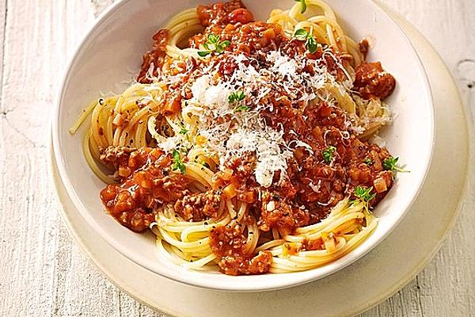

Spaghetti Bolognese Rezept

Beschreibung
Unsere Lieblingsbolognese, schnell und einfach hergestellt
- 2 Zwiebeln
- 1 Karotte
- 0,25 Knollen Sellerie
- 1 Knoblauchzehe
- 1 Loorbeerblatt
- Salz, Pfeffer
- Olivenöl
- Rotwein
- 200 gr Hack vom rind
- 1 Dose Tomaten 400 gr
- 4 EL Tomatenmark
- 0,25 Liter Brühe
- Etwas Paprikapulver
- 500 gr Spaghetti
- frischen Parmesan
Zubereitung
- Zwiebeln, Karotte, Sellerie und Knoblauch sehr fein würfeln.
- In einer großen Pfanne das Gemüse mit Lorbeerblatt und Salz in Öl anbraten.
- Das Hackfleisch zugeben, kurz anbraten lassen und mit Wein ablöschen.
- Tomatenmark, Dosentomaten und Brühe zufügen und mit Salz, Pfeffer und Paprika würzen.
- Die Spaghetti in Salzwasser bissfest kochen und zusammen mit der Soße servieren. Evtl. noch frischen Parmesan darübergeben.
Return to main page